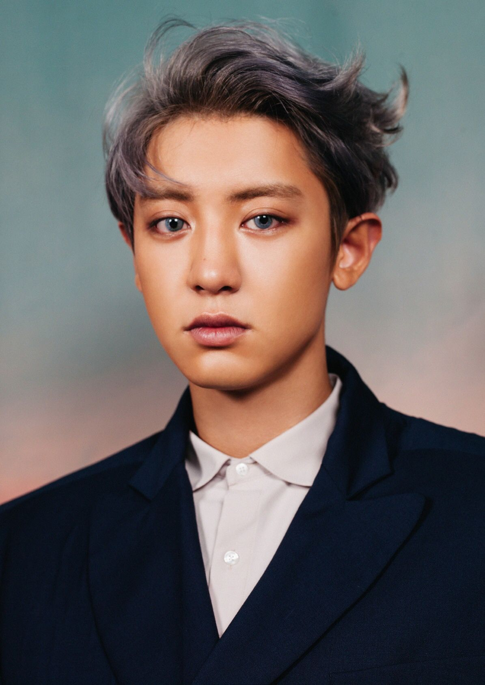
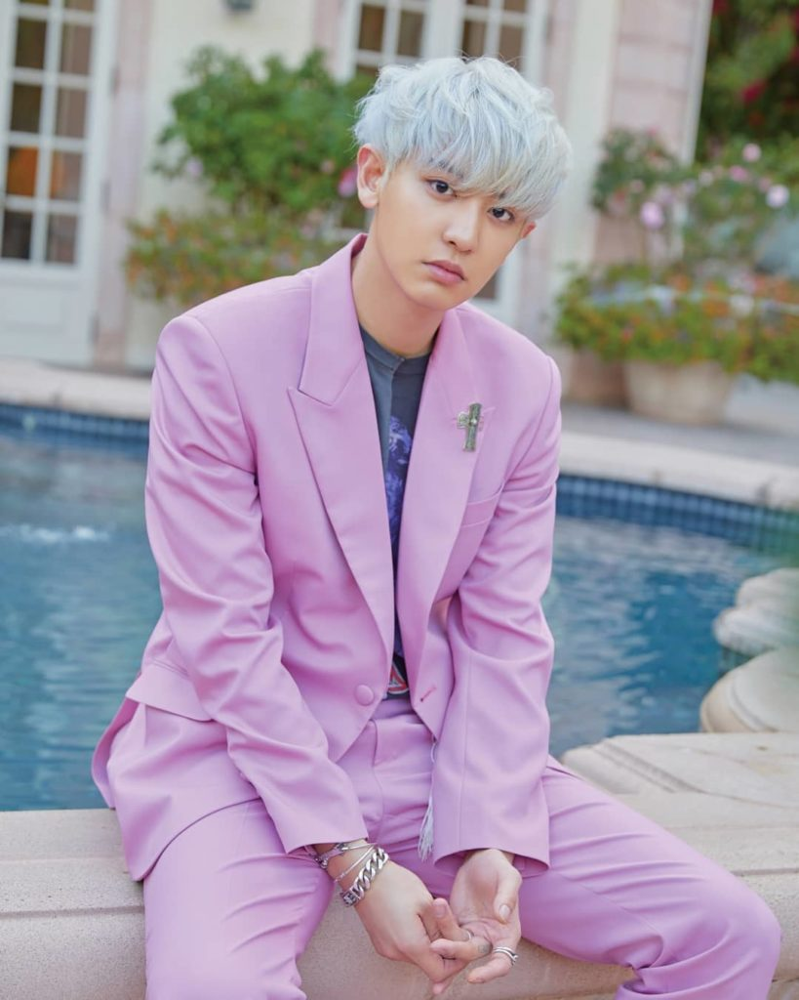
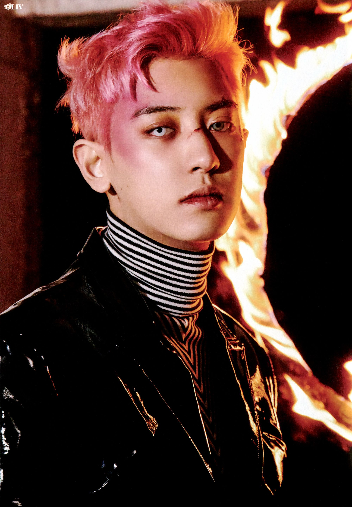
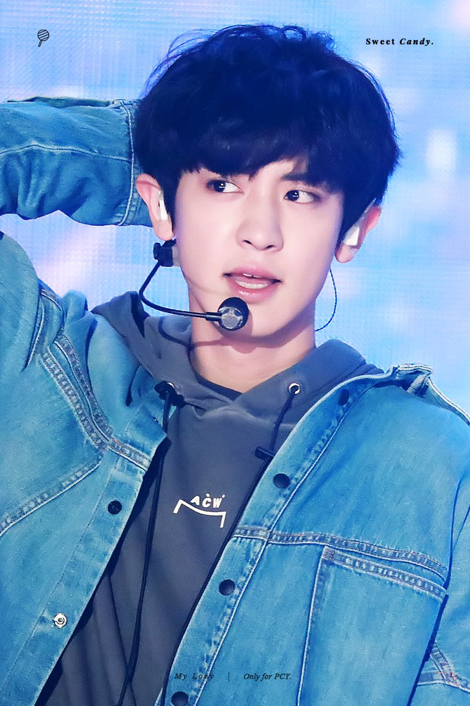

Я вітаю тебе на цій сторінці про популярну корейську
группу ЕХО, залишайся з нами:)

Я вітаю тебе на цій сторінці про популярну корейську
группу ЕХО, залишайся з нами:)
| Псевдонім | Чаньоль |
| Справжнє ім'я | Пак Чаньоль |
| Родився | 27 листапада 1992 року |
| Родом з | Сеул, Південна Корея |
| Ріст | 186 см |
| Група крові | А |
Пак Чаньоль (кор. 박찬열, англ. Park Chanyeol), народився 27 листопада 1992 року, Сеул, Республіка Корея. Південнокорейський співак, актор, репер, автор пісень, продюсер і модель. Учасник південнокорейського бойбенда EXO, її підгрупи EXO-K і підрозділу EXO-SC.
Крім діяльності своєї групи, Чаньоль також знявся в різних телевізійних
дорамах і фільмах, таких як «Так я одружився на антифанатці» (2016),
«Таємні творці королеви» і «Спогади про Альгамбру» (обидва в 2018 році).
25 квітня 2019 року його випустив свою першу сольну пісню «SSFW» через SM
Station. A 22 липня вони дебютували з міні-альбомом What A Life.
   